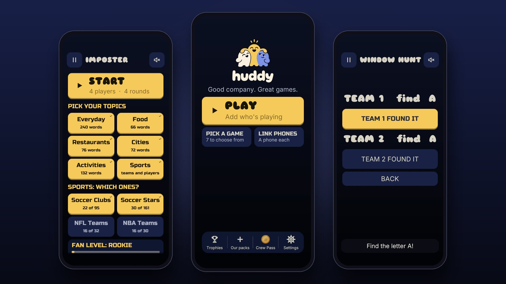
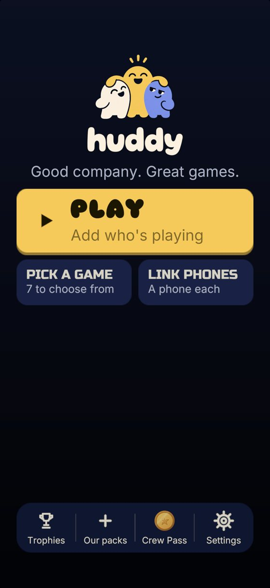
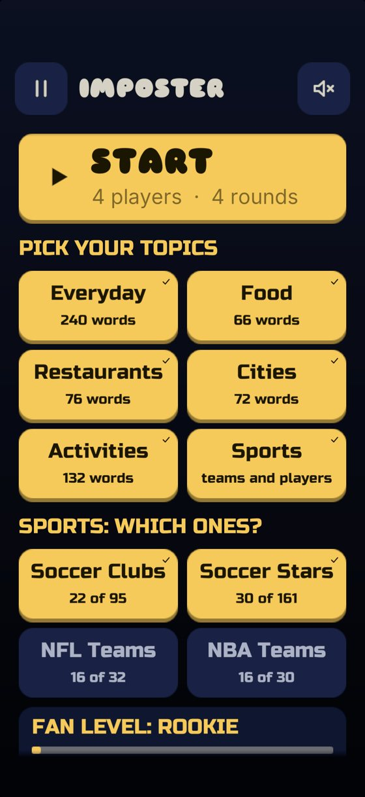
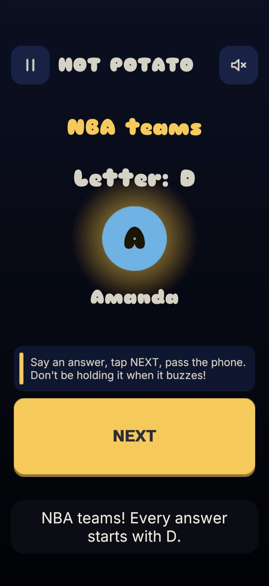
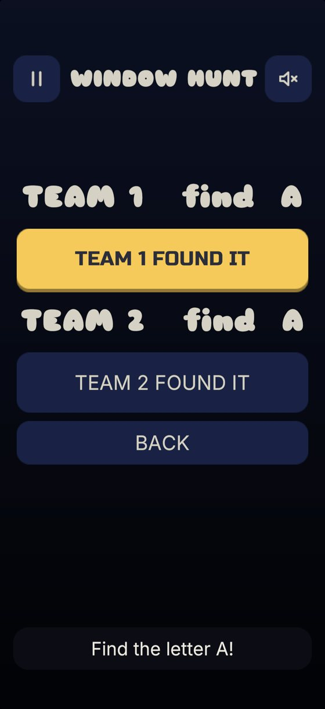
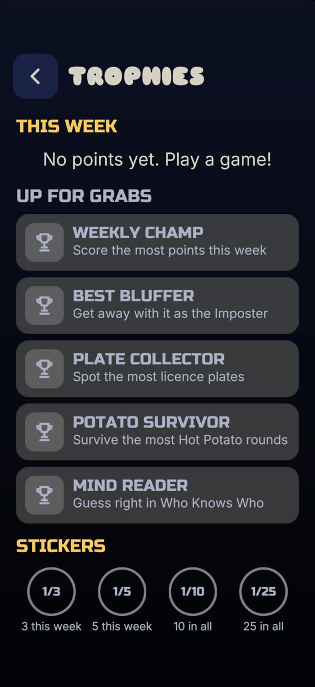
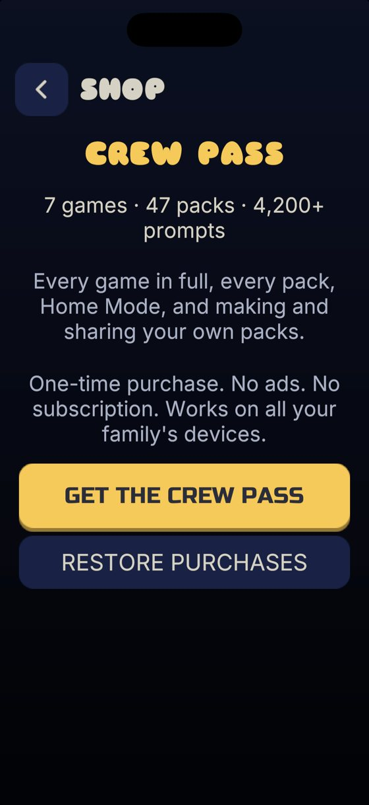
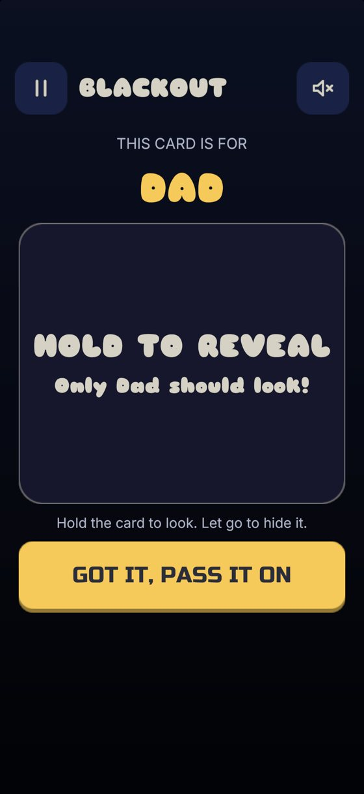
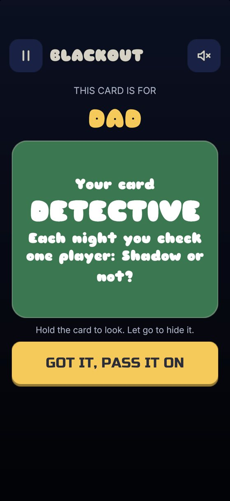

[ huddy ] · games for groups
On TestFlightall four games · the App Store next
Good company. Great games.
Seven quick party games for 2 to 8 people that work with no internet at all. Pass one phone round, or link everyone’s phones so each player plays on their own — easy round a table or across the seats of a car. Games fit the drive, the phone can read each turn aloud over the car’s Bluetooth, and trophies keep score all week. Made for the ride to soccer — and the lunch table.

quick games
players, one phone or a phone each
prompts across 47 packs
ads, subscriptions or internet needed
[ how it plays ]
Seven games, start with Imposter.
Pick a game, or tap Surprise Me and let the drive length pick for you.
One of you doesn’t know the word. Pick the topics — everyday things, food, cities, soccer clubs and stars — then find the bluffer. 3, 2, 1, point!
Soccer, football or basketball? A name comes up and you have six seconds. Be quick!
Guess it in 20 questions — or let the phone think of one and answer you.
Name it fast and pass it on, before the hidden fuse runs out.
Four games out the window — Plate Hunt, Road Bingo, Alphabet Signs and Colour Cars. Teams race to find it first, on the honour system.
How well do you know each other? Secret picks stay hidden until the reveal.






[ blackout ] · the newest game
A town, a hidden gang, and the lights go out.
A Shadow is hiding in Hollow Creek. Each night everyone makes a secret move; each day the town argues and locks somebody up. Lock up the Shadow before the Shadow takes the town. Four players on one phone, or four to eight with a phone each — and nobody gets hurt: players vanish or get locked up.


[ a phone each ] · at a table or in the car
Link the phones, everyone plays.
Every game works on linked phones, so it’s easy to play round a table or across the seats of a car. One phone hosts, everyone else opens Huddy and joins the room, and secrets stay on each player’s own screen.
The host starts a room and the other phones join it — straight from Home, nothing to set up.
Imposter words, Blackout roles and Who Knows Who picks only ever reach their own phone.
Answer together, fastest scores more; at night in Blackout, every move is made at the same moment.
Phones link straight to each other, so it works round a lunch table or across the seats of a car with no internet. At home they can link over Wi-Fi too.
A player without a phone plays on the host’s.
Lose a phone for a moment and it can rejoin the same seat within a minute.
[ made for the back seat ]
Eyes up, everyone in.
A six-year-old and a fourteen-year-old in the same game, with a parent playing from the front seat.
Over the car’s Bluetooth, the phone can read each turn aloud; at a lunch table it stays quiet. Big type, captions and Calm Motion are kind to car sickness.
The driver plays by voice. The first launch says it plainly: never hand the phone to the driver.
Pick a drive length and Surprise Me fills it. Tap We’ve Arrived to pause, and pick it up on the way home.
Every game in full, every pack, Home Mode and your own packs, for one price. No ads, no subscription, and it works on all your family’s devices.
An iPad flat on the table: seats around the edges, and tilt it toward you to peek at your card.
Points add up across the week, with trophies like Best Bluffer and Potato Survivor.
[ lab notes ] · from the build log
Built by the flow, then by us.
Built by the published flow. Build a game from a spec took Huddy through all eleven milestones in five rounds.
390 tests pass. Huddy → Build All prints HUDDY BUILD OK and HUDDY TESTS: 390 passed, 0 failed.
On a real iPhone. The screens above are from it. It’s on TestFlight now, with the App Store next.
Built with overcli.
Huddy is the first game built start to finish by the published flow: five rounds of the same loop you can install from overcli’s flow library.